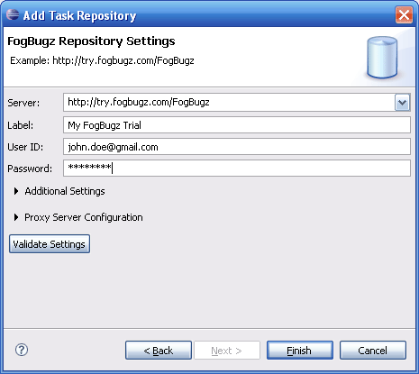

Creating New FogBugz Task Repository
- Open Mylyn Task Repositories view. From the menu, select Window -> Show View -> Other -> Mylyn -> Task Repositories
- From the context menu, click on Add New Repository and then select FogBugz Repository
- Provide
repository details namely, the FogBugz server's URL, username and
password. The Validate Settings button verifies if the credentials are
correct.
